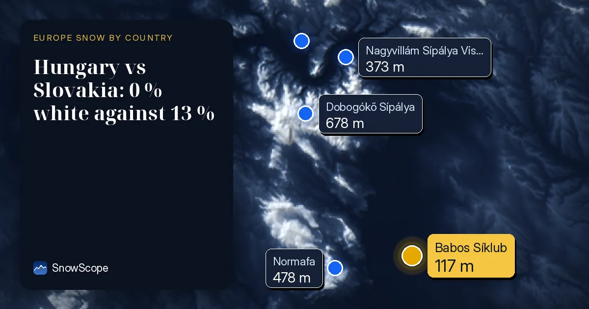

Hungary vs Slovakia: 0 % white against 13 %
0 % of the mapped high ground is white in Hungary, against 13 % in Slovakia. The deepest resort in Hungary has 0 cm; in Slovakia it is Vysoké Tatry with 33 cm.
See the live snow forecast for Babos Síklub in the SnowScope appSnow depth, powder alerts and the 3D map, free.
Across the border
For a trip near the border this decides the direction: the snow is not where the map of borders would suggest, it is where the last storm went.
Snow covers roughly 0 km² in Hungary on 22 November, about the same as yesterday.
| Country | White | Deepest resort | Next 7 days |
|---|---|---|---|
| Hungary | 0 % | Babos Síklub | 8 cm |
| Slovakia | 13 % | Vysoké Tatry | 10 cm |
| Romania | 25 % | Balea Lac | 51 cm |

The neighbours today
For comparison, the neighbours on the same day: Slovakia: 13 % white, deepest Vysoké Tatry with 33 cm, up to 10 cm in the week ahead; Romania: 25 % white, deepest Balea Lac with 17 cm, up to 51 cm in the week ahead.
Where to ski first
The 10 resorts in Hungary on our map are still green.
Forecast for the week
The week ahead could bring up to 8 cm, 0 cm of it in the next three days.
Thursday 26 November stands out, with up to 6 cm in a day.
Further out, days 8 to 14 show up to 7 cm on the snowiest slopes.
The week in numbers
Day by day, the white area in Hungary went: 16 November 0 km²; 17 November 0 km²; 18 November 0 km²; 19 November 0 km²; 20 November 0 km²; 21 November 0 km²; 22 November 0 km².
The deepest resort changed hands 3 times this week.
Today's snow cover
Over the week the white area has hardly moved from 0 km². No height band is mostly white yet.
New snow in the last three days
The last three days were dry or nearly so, with no more than 0 cm anywhere.
What it means on the slopes
A quiet spell: groomed runs stay reliable, the snow off the pistes gets older and firmer.
Tips for skiers
- Snow above the tree line can be wind-packed: watch the ridges.
- Fresh snow on a cold base sticks badly: take care on steep slopes.
- Roads to the higher resorts may need winter tyres or chains.
About these numbers
Resort snow depths are the deepest snow on the resort's upper slopes on the date shown; they are estimates for an area, not a measurement at one point. Forecasts can change. Always read the official avalanche bulletin before going off-piste.
Cite this report
For research, teaching or the press: the numbers and charts are free to reuse under CC BY 4.0 with this citation.
SnowScope (2026), Hungary vs Slovakia: 0 % white against 13 %, https://snowscope.app/blog/en/2026/11/hungary-snow-vs-neighbours-22-november-2026.html, accessed 2026-11-22
SnowScope (Atlas Labs). (2026, November 22). Hungary vs Slovakia: 0 % white against 13 %. SnowScope snow reports. https://snowscope.app/blog/en/2026/11/hungary-snow-vs-neighbours-22-november-2026.html
BibTeX
@misc{snowscope2026hungarysnowvsneighbours2,
author = {{SnowScope (Atlas Labs)}},
title = {Hungary vs Slovakia: 0 % white against 13 %},
year = {2026},
month = nov,
howpublished = {\url{https://snowscope.app/blog/en/2026/11/hungary-snow-vs-neighbours-22-november-2026.html}},
note = {Published 2026-11-23 00:50 UTC; accessed 2026-11-22}
}· CC BY 4.0 · Methods, data and tools →
Babos Síklub: snow and temperature by height, this winter vs last (tools) →
Follow Babos Síklub
Free: a message when fresh snow is coming, and the forecast every morning.
More snow reports

Up to 30 cm of snow fell on northern Velebit and Bjelolasica on Friday 13 November 2026. By Tuesday it was gone. Day by day, what the mountains kept, and when snow comes back.

Only Borovets and Bansko have a trace of snow at the top today, 2 cm each. A week ago Borovets had 11 cm. Day by day, and the one snowy day in the forecast.

From 13 to 19 November 2026 Slovenia got the most snow and kept it; Serbia and Croatia had a deep but short white weekend; Montenegro only on Durmitor; Bulgaria almost none. The ranking, with links to each country report.